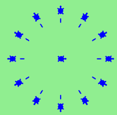

Olá, tartaruguinhas!¶

Existem vários módulos em Python que fornecem recursos muito poderosos que podemos utilizar em nossos programas. Alguns desses permitem enviar email ou buscar uma página na web. Outros tornam possível realizar cálculos matemáticos bastante complexos. Neste capítulo vamos introduzir um módulo que nos permite criar um objeto chamado turtle (N. do T.: para facilitar a leitura, embora o objeto seja do tipo turtle, vamos muitas vezes chamar de tartaruga mesmo) que pode ser usado para desenhar figuras (gráfico de tartarugas).
O gráfico de tartaruga é baseado em uma metáfora bem simples. Imagine que você tem uma tartaruga que entende inglês. Você pode dar comandos simples à tartaruga tais como “siga em frente” ou “vire à direita”. A medida que a tartaruga se move, se o seu rabo está virado para baixo, tocando o chão, ela desenha uma linha (deixa um rastro) ao se mover. Se você mandar a tartaruga levantar o rabo ela ainda pode se mover mas não vai deixar nenhum rastro. Como você vai ver, é possível fazer desenhos muito impressionantes usando esse mecanismo simples.
Nota
Embora seja muito divertido brincar com as tartarugas, o propósito real desse capítulo é ensinar um pouco mais de Python e desenvolver o nosso tema sobre raciocínio computacional ou pensando como um cientista da computação. A maior parte dos assuntos sobre Python tratados aqui serão cobertos com maior profundidade mais tarde.
Nosso primeiro programa com tartarugas¶
Vamos experimentar algumas linhas de código em Python para criar uma nova tartaruga e desenhar uma figura simples como um retângulo. Vamos dar o nome de alex à variável que vai fazer referência a nossa primeira tartaruga, mas você pode escolher outro nome se desejar (para isso basta criar um outro nome segundo as regras descritas no capítulo anterior).
O trecho de programa a seguir desenha apenas os dois primeiros lados do retângulo. Após a linha 3 você terá uma linha reta partindo do centro do canvas para a direita e, após a linha 6, o canvas vai mostrar a tartaruga e metade do retângulo desenhado. Pressione o botão run para ver o resultado.
(ch03_1)
A primeira linha desse programa diz ao Python para carregar o
módulo chamado turtle. Esse módulo inclui dois novos tipos que
agora podem ser utilizados: o tipo Turtle e o tipo Screen. A
notação utilizando ponto como em turtle.Turtle quer dizer
“O tipo Turtle que está definido no módulo turtle”. Lembre-se que em
Python o uso de letras maiúsculas e minúsculas tornam os nomes
diferentes, ou seja, o nome do módulo que começa com a letra minúscula
t é diferente do tipo Turtle.
A segunda linha cria um objeto do tipo Screen (que é costumeiramente
chamada de janela em uma interface gráfica) e a atribui à variável
wn. Toda janela contém um canvas, que é a área dentro da
janela sobre a qual podemos desenhar.
A linha 3 cria uma tartaruga (Turtle) e a atribui à variável
alex, ou seja, alex é uma referência para essa tartaruga recém
criada. Essas primeiras três linhas criam os recursos necessários para
que possamos começar a desenhar.
Nas linhas 4-6, o objeto alex é instruido a se mover e a virar. Isso é feito chamando ou ativando métodos do objeto alex (que é do tipo Turtle) — essas são as instruções que todas as tartarugas conhecem e sabem como responder.
Complete o retângulo ...
Modifique o programa adicionando os comandos necessários para que alex complete o retângulo.
Um objeto pode possuir vários métodos — coisas que ele é capaz de fazer — e ele pode ter também atributos — (chamados também de propriedades). Por exemplo, cada tartaruga tem um atributo color (cor). A chamada do método alex.color(“red”) faz com que alex fique vermelho e as linhas que ele desenhar a seguir serão vermelhas também.
A cor da tartaruga, a espessura da caneta (o rabo), a posição da tartaruga dentro da janela, a direção que ela aponta, etc., são partes do seu estado atual. De forma semelhante, o objeto Screen tem uma cor de fundo, que faz parte do estado do objeto referenciado pela variável wn.
Existem vários métodos que nos permite modificar objetos do tipo Turtle e Screen. Vamos aqui mostrar apenas alguns. Para isso, comentamos apenas as linhas que são diferentes do exemplo anterior. Note também que estamos chamando a tartaruga de tess.
(ch03_2)
A última linha desse programa tem uma papel importante. A variável wn
faz referência à janela (Screen). Quando chamamos o método
exitonclick, a execução do programa é interrompida e ele fica
esperando que o usuário clique em algum lugar na janela com o
mouse. Quando o programa recebe o clique, o programa fecha a janela
com a tartaruga e termina sua execução.
Cada vez que rodamos esse programa, uma nova janela é criada, e seu conteúdo é mostrado até receber um clique.
Estenda esse programa ...
- Modifque esse programa para que ele pergunte ao usuário a cor de fundo desejada antes da janela ser criada. O programa deve armazenar a resposta em uma variável e modificar a cor de fundo conforme o desejo do usuário. (Dica: você pode encontrar uma lista com os nomes das cores permitidas em http://www.w3schools.com/html/html_colornames.asp. A lista inclui cores bem exóticas, como “PeachPuff” e “HotPink”.)
- Faça uma mudança semelhante para permitir que o usuário modifique a cor da tartaruga tess.
- Faça o mesmo para a espessura da caneta. Dica: o seu diálogo
com o usuário vai retornar um string, mas o método
pensizedeve ser chamado utilizando um inteiro como argumento. Portanto você deve converter o string para um inteiro antes de chamar o métodopensize.
Teste o seu entendimento
3.1.1: Considere o seguinte código:
import turtle wn = turtle.Screen() alex = turtle.Turtle() alex.forward(150) alex.left(90) alex.forward(75)Para que serve a linha "import turtle"?
3.1.2: Por que é necessário escrever "turtle.Turtle()" para se criar um novo objeto Turtle?
3.1.3: Verdadeiro ou Falso: O objeto Turtle pode ter qualquer nome, desde que o nome siga a convenção descrita no capítulo 2.
Instâncias — um bando de tartarugas¶
Da mesma maneira que podemos ter vários inteiros em um programa, podemos ter várias tartarugas. Cada uma delas é um objeto independente que chamamos de instância do tipo (classe) Turtle. Cada instância tem os seus próprios atributos e métodos — assim alex pode desenhar usando uma caneta preta fina e ficar em uma posição, enquanto tess pode ir em outra direção desenhando com uma caneta rosa. O seguinte ocorre quando alex completa um quadrado e tess completa seu triângulo:
(ch03_3)
Algumas observações sobre Como pensar como um cientista da computação:
- Há 360 graus em uma circunferência. Se você somar todas as mudanças de direção feitas por uma tartaruga, independentemente dos passos que ocorreram entre as mudanças, é fácil descobrir se a soma das alterações é um múltiplo de 360. Podemos concluir assim que alex termina virado para a mesma direção que tinha ao ser criado. (Convenções geométricas estabelecem que 0 graus aponta para o leste, e isso ocorre nesse caso também!)
- Poderíamos ter evitado a última virada de alex, mas dessa forma o resultado final não seria tão satisfatório. Sempre que você precisar desenhar uma forma fechada, como um quadrado ou retângulo, é uma boa prática deixar a tartaruga de volta ao estado original, apontando para a mesma direção inicial. Isso facilita o raciocínio, para nós humanos, sobre o programa e a composição de pedaços de código em programas maiores.
- Fizemos o mesmo com a tess: ela desenhou o seu triângulo e deu uma virada completa de 360 graus. Então nós a viramos e a movemos para o lado. Mesmo a linha 18 em branco é uma dica de como o agrupamento mental do programador está funcionando: de forma geral, os movimentos da tess foram agrupados como “desenhe o triângulo” (linhas 12-17) e então “mova-se para longe da origem” (linhas 19 e 20).
- Um dos principais usos para comentários é deixar gravado o seu agrupamento mental e as ideias grandes. Elas nem sempre ficam explícitas no código.
- Ok, duas tartarugas podem não ser suficientes para um bando, mas deu para você ter uma ideia!
O laço for¶
Foi muito tedioso desenhar o quadrado. Nós tivemos de mover e então girar, mover e então girar, etc. etc. quatro vezes. Se estivéssemos desenhando um hexágono, ou um octágono, ou um polígono com 42 lados, seria um pesadelo ter de duplicar todo aquele código.
Um bloco básico de qualquer programa é o que permite repetir algum código várias e várias vezes. Na ciência da computação nos referimos a essa ideia repetitiva de iteração. Nesse capítulo vamos explorar alguns mecanismos básicos de iteração.
Em Python, o comando for nos permite escrever programas que implementam iterações. Por exemplo, vamos assumir que temos alguns amigos e que gostaríamos de enviar para cada um deles um email convidando-os para a nossa festa. Ainda não sabemos como enviar emails, então por enquanto vamos apenas imprimir uma mensagem para cada amigo.
(ch03_4)
Dê uma olhada na saída produzida quando você pressiona o botão run. Existe uma linha impressa para cada amigo. Isso funciona assim:
- amigo nesse comando
foré chamado de variável do laço. - A lista de nomes em colchetes é chamada de lista em Python. Listas são muito úteis. Veremos muito mais sobre elas mais tarde.
- A linha 2 é o corpo do laço. O corpo do laço é sempre recuado de um tab. Esse recuo determina exatamente que comandos estão “dentro do laço”. O corpo do laço é executado uma vez para cada nome na lista.
- A cada iteração ou passagem do laço, primeiro é feita um teste que verifica se ainda existem itens para serem processados. Se não há mais nenhum (isso é chamado de condição de parada do laço), o laço termina. A execução do programa continua na próxima instrução após o corpo do laço.
- Se ainda houver itens a serem processados, a variável do laço é atualizada para referenciar o próximo item da lista. Isto significa, neste caso, que o corpo do laço é executado sete vezes, e em cada vez amigo fará referência a um amigo diferente.
- No final de cada execução do corpo do laço, o Python volta ao
comando
forpara ver se há mais itens a serem manipulados.
Teste o seu entendimento
3.2.1: Verdadeiro ou Falso: você pode ter apenas uma tartaruga ativa de cada vez. Se você criar uma segunda, você não será mais capaz de acessar ou usar a primeira.
Editor Scratch
Fluxo de execução do laço for¶
A medida que o programa executa, o interpretador sempre mantém registro sobre o comando que está prestes a ser executado. Chamamos isso de fluxo de controle ou fluxo de execução do programa. Quando seres humanos executam programas, muitas vezes eles usam um dedo para apontar para cada comando executado. Então você pode pensar em fluxo de controle como sendo o “dedo do Python em movimento”.
Até agora o fluxo de controle foi estritamente de cima para baixo, uma instrução de cada vez. Nós chamamos esse tipo de controle sequencial. O fluxo de controle sequencial é sempre assumido como o comportamento padrão para um programa de computador. O comando for muda isso.
O fluxo de controle é muitas vezes fácil de visualizar e entender se traçarmos um fluxograma. Este fluxograma mostra exatamente os passos e a lógica de como o comando for executa.

Uma demonstração usando o codelens é uma boa maneira de ajudá-lo a visualizar exatamente como o fluxo de controle funciona com o laço for. Tente avançar e retroceder no programa pressionando os botões. Você pode ver o valor de amigo mudar a medida que o laço itera pela lista de amigos.
(vtest)
Iteração simplifica o programa de tartaruga¶
Para desenhar um quadrado gostaríamos de fazer a mesma coisa quatro vezes — mover a tartaruga alguma distância para frente e girar 90 graus. Anteriormente usamos 8 linhas de código Python para fazer alex desenhar os quatro lados de um quadrado. Este próximo programa faz exatamente a mesma coisa mas, com a ajuda do comando for, usa apenas três linhas (não incluindo o código de inicialização). Lembre-se que o comando for repetirá o forward e left quatro vezes, uma vez para cada valor na lista.
(ch03_for1)
Mesmo que “economizar algumas linhas de código” seja conveniente, isso não é a parte mais relevante. O mais importante é que nós encontramos um “padrão de repetição” de comandos e nós reorganizamos o programa para repetir o padrão. Encontrar os pedaços e, de alguma forma, organizar nossos programas ao redor desses pedaços é uma habilidade vital para se aprender Como pensar como um cientista da computação.
Os valores [0,1,2,3] foram fornecidos para fazer o corpo do laço executar 4 vezes. Poderíamos ter usado quatro valores quaisquer. Por exemplo, considere o seguinte programa.
(ch03_forcolor)
Como há quatro itens na lista, a iteração ainda irá ocorrer quatro vezes. A variável do laço aColor vai assumir cada cor na lista. Podemos até dar um passo adiante e usar o valor de aColor como parte da computação.
(colorlist)
Nesse caso, o valor de aColor é usado para modificar o atributo cor de alex. Cada iteração causa a modificação de aColor para o próximo valor da lista.
Check your understanding
3.4.1: Quantas linhas são impressas pelo código a seguir?
for numero in [5, 4, 3, 2, 1, 0]:
print("Eu tenho", numero, "biscoitos. Vou comer um.")
3.4.2: Como o Python sabe quais linhas fazem parte do corpo do laço?
3.4.3: No código a seguir, qual o valor de numero da segunda vez que o Python executa o laço?
for numero in [5, 4, 3, 2, 1, 0]:
print("Eu tenho", numero, "biscoitos. Vou comer um.")
3.4.4: Considere o seguinte código:
for aColor in ["yellow", "red", "green", "blue"]: alex.forward(50) alex.left(90)O que cada iteração do loop (ou seja, "pedaço de código") faz?
A função range¶
No exemplo da última sessão (mostrado novamente abaixo), usamos uma lista de quatro inteiros para causar que a iteração se repetisse quatro vezes. Dissemos que poderíamos ter usado quatro valores quaisquer. De fato, até usamos quatro cores.
import turtle # cria alex
wn = turtle.Screen()
alex = turtle.Turtle()
for i in [0,1,2,3]: # repita 4 vezes
alex.forward(50)
alex.left(90)
wn.exitonclick()
Acontece que a geração de listas com um número específico de inteiros é uma coisa muito comum de se fazer, especialmente quando você quer escrever uma iteração simples controlada por um laço for. Mesmo que você possa usar quatro itens quaisquer, ou quaisquer quatro números inteiros, o convencional é usar uma lista de inteiros que começa com 0.
Na verdade, essas listas são tão populares que o Python fornece um objeto range (intervalo) nativo que pode ser usado para fornecer uma sequência de valores para o laço for. As sequências começam de 0 e nos casos mostrados abaixo não incluem o 4 e o 10.
for i in range(4): # Executa o corpo com i = 0, depois 1, depois 2, depois 3 for x in range(10): # x recebe um valor de [0, 1, 2, 3, 4, 5, 6, 7, 8, 9] de cada vez
Nota
Cientistas da computação gostam de contar a partir do 0!
Assim, para repetir algo quatro vezes, um bom programador de Python faria:
for i in range(4):
alex.forward(50)
alex.left(90)
A função range é na verdade uma função muito poderosa para a criação de sequências de inteiros. Ela pode receber um, dois ou três argumentos. Nós vimos o caso mais simples de um argumento, como range(4) que cria [0, 1, 2, 3].
Mas e se na verdade quisermos a sequência [1, 2, 3, 4]?
Podemos obter isso passando dois argumentos a range, onde o primeiro argumento define o início do intervalo e o segundo argumento define o fim. A chamada range(1, 5) retorna a sequência desejada. Mas o que aconteceu com o 5? Nesse caso interpretamos os argumentos de range para significar range(início, fim+1).
Nota
Mas por que o range simplesmente não funciona como range(início, fim)?
Pense nisso da seguinte forma. Como os cientistas da computação gostam de
começar a contar a partir do 0 ao invés de 1, range(N) produz a
sequência de sequência de coisas que tem comprimento N, mas a consequência
de começar com 0 é que o número final da sequência é N-1. No caso de início e
fim, é mais fácil pensar que a sequência começa do início e continua até
o fim, mas não inclui o fim.
Execute os dois exemplos a seguir. Adicione uma outra linha abaixo para criar uma sequência que comece em 10 e vai até 20 (incluindo o 20).
(ch03_5)
O codelens pode nos ajudar também a entender como a função range funciona. Nesse caso, a variável i receberá os valores produzidos por range.
(rangeme)
Finalmente, suponha que nós queremos ter uma sequência de números pares.
Como é que vamos fazer isso? Fácil, nós adicionamos um outro parâmetro, um passo,
que diz ao range o quanto pular.
Então, se queremos os 10 primeiros números pares podemos usar
range(0,19,2). A forma mais geral de range é
range(início, fim, passo). Você também pode criar uma sequência de números que
começa grande e fica menor, usando um valor negativo para o passo.
(ch03_6)
Experimente no codelens.
(rangeme2)
Teste o seu entendimento
3.5.1: No comando range(3, 10, 2), o que é definido pelo segundo argumento (10)?
3.5.2: Que comando gera a lista [2, 5, 8]?
3.5.3: O que acontece quando range recebe apenas um argumento? Por exemplo: range(4)
Editor Scratch
Observações e alguns outros métodos de Turtle¶
Vamos ver mais algumas coisas de Turtle que lhe podem ser úteis.
Os métodos de um objeto Turtle podem usar ângulos ou distâncias negativas. Assim,
tess.foward(-100)move tess para trás etess.left(-30)vira ela para a direita. Além disso, como há 360 graus em um círculo, girando 30 para a esquerda vai deixá-la virada na mesma direção que girando 330 para a direita! (No entanto, a animação na tela será diferente — você será capaz de dizer se a tess está girando no sentido horário ou anti-horário!)Isso sugere que nós não precisamos de dois métodos para girar tanto à esquerda quanto à direita — poderíamos ser minimalistas e ter apenas um método. Há também um método backward. (Se você é muito nerdy, pode gostar de escrever
alex.backward(-100)para mover alex para frente!)Parte de pensar como um cientista é entender mais sobre a estrutura e as relações elaboradas existentes em sua área. Assim, uma revisão de alguns conceitos básicos de geometria como fizemos aqui é um bom começo para continuar brincando com as tartarugas.
O rabo da tartaruga pode ser deixado para baixo ou para cima. Isso permite que a tartaruga se mova sem desenhar uma linha. Os métodos são
penupependown.alex.penup() alex.forward(100) # this moves alex, but no line is drawn alex.pendown()
Cada tartaruga pode ter sua própria forma. As formas já prontas são
arrow,blank,circle,classic,square,triangle,turtle.... alex.shape("turtle") # experimente as outras formas ...
Você pode controlar a velocidade de animação da tartaruga. (A animação controla a velocidade usada para a tartaruga virar e se mover). A velocidade pode ser configurada entre 1 (a mais baixa) e 10 (mais rápida). A velocidade 0 tem um significado especial — a animação é desativada e o programa é executado o mais rápido possível.
alex.speed(10)
Uma tartaruga pode “carimbar” a sua pegada no canvas, que vai permanecer mesmo após a tartaruga tenha se mudado para outro lugar. O carimbo funciona mesmo quando o rabo está voltado para cima.
Vamos fazer um exemplo que mostra alguns desses novos recursos.
(ch03_7)
A lista de inteiros mostrada acima é criada ao imprimir o resultado de range(5,60,2). Isso foi feito apenas para lhe mostrar as distâncias
sendo usadas para mover a tartaruga.
O uso real é feito dentro do laço for.
Mais uma coisa para se ter cuidado. Todas exceto uma das formas que você vê aqui
na tela são pegadas criadas por stamp. Mas o programa possui apenas uma
instância de Turtle — você consegue descobrir qual é a tess verdadeira?
(Dica: se você tem alguma dúvida, escreva algumas linhas de código depois
do laço for para mudar a cor de tess, ou colocar o seu rabo para baixo
para desenhar uma linha, ou mudar a sua forma etc.)
Exercício
- Turtle Race Nesse exercício dirigido você vai resolver alguns problemas relacionados à implementação de uma corrida de tartarugas.
Resumo de métodos de Turtle¶
| Método | Parâmetros | Descrição |
|---|---|---|
| Turtle | None | Cria e retorna um novo objeto turtle |
| forward | distância | Move para frente |
| backward | distância | Move para trás |
| right | ângulo | Vira no sentido horário |
| left | ângulo | Vira no sentido anti-horário |
| up | None | Levanta o rabo |
| down | None | Abaixa o rabo |
| color | cor | Muda a cor usada ao desenhar |
| fillcolor | cor | Muda a cor usada ao preencher um polígono |
| heading | None | Retorna a direção atual |
| position | None | Retorna a posição atual |
| goto | x,y | Move a tartarua para a posição x,y |
| begin_fill | None | Use a posição atual para preencher um polígono |
| end_fill | None | Termine o polígono na posição atual |
| dot | None | Deixe um ponto na posição atual |
| stamp | None | Deixe um carimbo da tartaruga na posição atual |
| shape | forma | Deve ser ‘arrow’, ‘classic’, ‘turtle’, ou ‘circle’ |
Depois que você se familiarizar com os componentes básicos do módulo gráfico turtle você pode conhecer ainda mais opções lendo a documentação online do Python. Note que vamos falar mais sobre a documentação do Python no próximo capítulo.
Glossário¶
- atributo
- Algum estado ou valor que pertence a um objeto particular. Por exemplo, tess tem uma cor.
- canvas
- A superfície dentro de uma janela usada para desenhar.
- condição de parada.
- Uma condição que, ao ocorrer, faz com que um laço pare de repetir
o seu corpo.
Nos laços
forque vimos neste capítulo, a condição de parada se torna verdadeira quando não há mais elementos para atribuir à variável do laço. - corpo do laço
- Conjunto de comandos contidos dentro de um laço. A identificação do corpo é feita pelo recuo (tab) a partir da declaração do laço.
- estado
- A coleção de valores de atributos mantida por um objeto de dados específico.
- fluxo de controle
- Veja fluxo de execução no próximo capítulo.
- for (laço for)
- Um comando do Python que permite a repetição de comandos dentro do corpo do laço for.
- instância
- Um objeto que pertence a uma classe. tess e alex são diferentes instâncias da classe Turtle.
- invocar
- Um objeto tem métodos. Usamos o verbo invocar para significar
ativar o método. A invocação de um método é feita
colocando parênteses após o nome do método, com alguns dos
possíveis argumentos. Então
wn.exitonclick()é uma invocação do métodoexitonclick. - iteração (comando de)
- Um bloco de construção básico de algoritmos (programas). Ele permite que passos sejam repetidos. Às vezes chamado laço (loop, ou looping).
- método
- Uma função de um objeto. Invocando ou ativando o
método faz com que o objecto responda de alguma forma,
por exemplo,
forwardé o método que usamos para uma tartaruga se mova para frente (tess.forward(100). - módulo
- Um arquivo contendo definições e comandos do Python para uso em outros programas em Python. O conteúdo de um módulo é disponibilizado para outro programa usando o comando import.
- objeto
- Uma “coisa” que pode ser referida por uma variável. Essa coisa pode ser uma janela no monitor, ou uma das tartarugas que você criou.
- range
- Uma função nativa do Python para gerar sequências de números inteiros. Ela é especialmente útil quando precisamos escrever um laço que é executado um número de vezes determinado.
- sequencial
- O comportamento padrão de um programa. O processamento passo-a-passo de um algoritmo.
- variável do laço
- Uma variável usada como parte de um laço. Ela recebe um valor diferente em cada iteração do laço e é usada como parte da condição de parada do laço.
- Turtle
- Classe que define objetos de dados usados para criar imagens (gráficos de tartarugas). “turtle”, com minúscula, é o nome do módulo gráfico do Python que contém Turtle.
Exercícios¶
Escreva um programa que escreve
Eu gosto das tartarugas do Python!1000 vezes.
Dê três atributos de seu objeto telefone celular. Dê três métodos do seu celular.
- Escreva um programa que usa um laço for para imprimir
Um dos meses do ano é janeiroUm dos meses do ano é fevereiroUm dos meses do ano é marçoetc ...
Considere a seguinte atribuição
xs = [12, 10, 32, 3, 66, 17, 42, 99, 20]- Escreva um laço que imprima cada um dos números em uma nova linha.
- Escreva um laço que imprima cada um dos números e seu quadrado em uma nova linha.
Use o laço
forpara fazer uma tartaruga desenhar os seguintes polígonos regulares (reguar significa que todos os lados tem o mesmo comprimento e ângulo entre lados):- Um triângulo equilátero
- Um quadrado
- Um hexágono (seis lados)
- Um octágono (oito lados)
Um pirata bêbado vira aleatoriamente e então dá 100 passos para frente, vira aleatoriamente novamente, dá mais 100 passos, vira aleatóriamente, etc. Um aluno de sociologia mede e grava o ângulo de cada virada antes dele dele andar 100 passos. O resultado experimentais é
[160, -43, 270, -97, -43, 200, -940, 17, -86]. (Ângulos positivos no sentido anti-horário). Use uma tartaruga para desenhar o caminho percorrido pelo nosso amigo bêbado.
Melhore o seu programa acima para dizer também a direção final do pirata bêbado, após percorrer todo o caminho.
Em uma folha de papel, simule o seguinte programa e mostre o desenho. Ao terminar, pressione o botão
rune verifique a sua resposta.
Escreva um programa que desenha uma forma como essa:

Escreva um programa que desenha a face de um relógio que se pareça com:

Escreva um programa que desenhe alguma figura. Seja criativo e experimente os métodos de Turtle vistos nesse capítulo.
Crie uma tartaruga e a atribua a uma variável. O que você obtem ao imprimir o seu tipo?